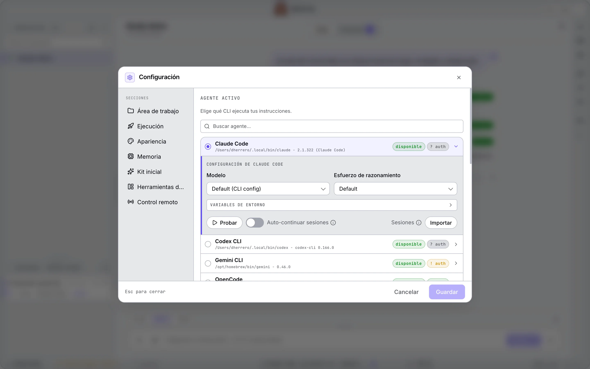
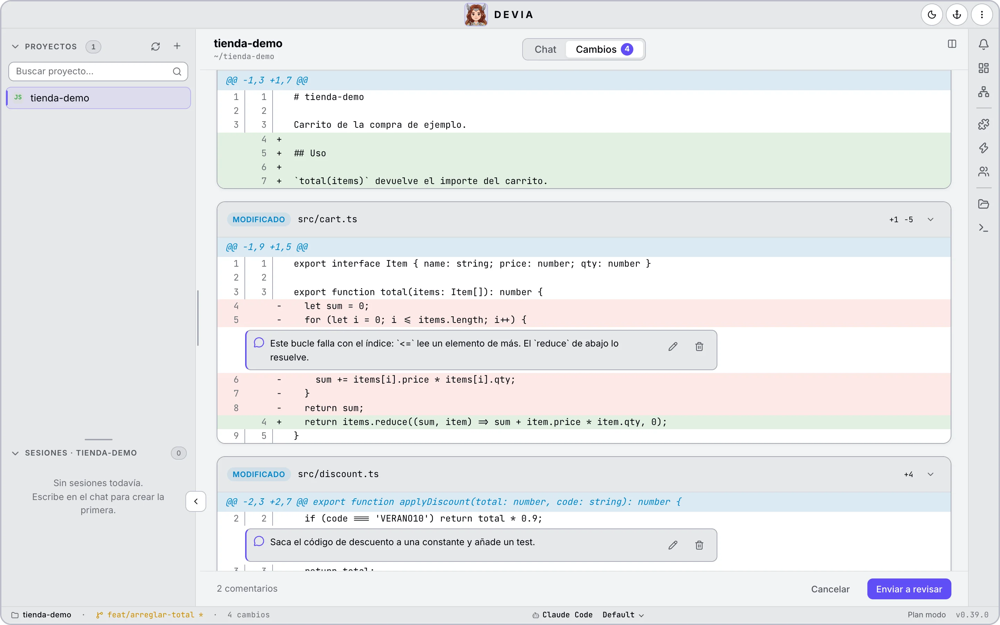

Your coding agents in one window
A desktop app to run Claude Code, Codex, Gemini, and more.

-
Agents and execution
Work with Claude Code, Codex, Gemini CLI, OpenCode, Cursor Agent, Copilot, Grok, Pi, Kimi, Hermes, Qwen, Qoder, and DeepSeek, or add your own if it speaks ACP. Switch agents mid-session and choose between plan, apply, and apply-yolo.

-
Context and memory
Persistent memory across sessions, per-project history, and context, cost, and tokens in view. Devia’s own code graph gives the agent the project’s structure, and code mode runs read-only scripts over your MCP servers.

-
Method and planning
A kanban per project that the agent itself reads and updates, with specs, tasks, and dependencies. Devia Method guides the work, and interactive cards ask you questions, request plan approval, or ask for a review, with any agent.

-
Git and review
Repository status, inline diffs, and a branch switcher. Comment on diff lines and send them to the agent as a review. Up to four agents in parallel, each isolated in its own git worktree.

-
Remote and platform
Direct your agents from Telegram, with file delivery, while Devia is open. Integrated terminal, Docker Compose, and opening in your IDE, on Windows, macOS, and Linux.

Everything on your machine
- Your sessions, memory, kanban, and settings live on your disk (
~/.devia-app/). - No accounts and no Devia cloud.
- The only thing that leaves your machine is what each agent’s CLI sends to its own provider.
Download Devia Desktop
Free and open source (Apache-2.0), with every feature.